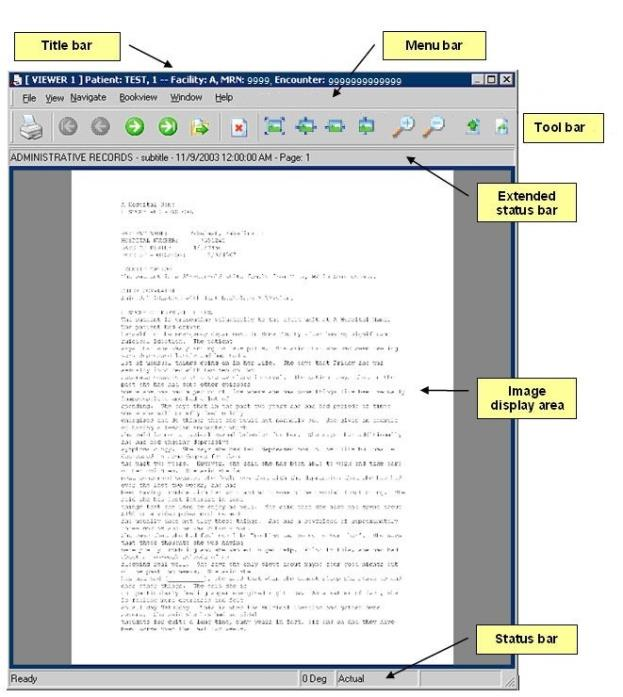

The active viewer window has a highlighted title bar. Click anywhere in the image display area to activate a window.

Related topics
Title bar
Viewer menus
Toolbars
Status bars
Image display area
OneContent Patient Folder WinDSS Release 17.6 - December 2017Proprietary to Allscripts - Not to be duplicated or disclosed to unauthorized persons.